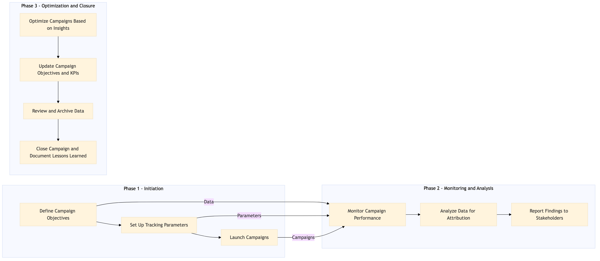

This process document outlines the steps for Marketing Attribution and ROI Measurement within the OTA Marketing Media and Loyalty domain, focusing on performance marketing.
| Trigger | Initiation of a new marketing campaign or review of existing campaigns |
| Outcome | Accurate attribution of marketing efforts to revenue generation and clear measurement of ROI across various channels and systems. |
| Systems | Expedia Open World Partner Central Amadeus NDC Sabre GDS Travelport EVC One Key TravelAds AWS SageMaker Snowflake Kafka Salesforce Tableau Concur T2 Concur Expense Amex GBT Neo/Complete S/4HANA International SOS Cvent Amex Corporate Card VCN Analytics Cloud Workday |

Click to enlarge
| Step | Name & Pain Point | Role | System | Input | Output | KPI | Flags |
|---|---|---|---|---|---|---|---|
| 1.1 | Define Campaign Objectives Aligning marketing goals with business objectives | Marketing Manager | Salesforce | Campaign details, target audience, budget | Campaign objectives and KPIs | Clear definition of success metrics | ⚠ Exception |
| 1.2 | Set Up Tracking Parameters Ensuring accurate data collection | Data Analyst | Expedia Open World, Partner Central | Campaign objectives and KPIs | Tracking parameters for each channel | Consistent tracking across platforms | ⚠ Exception |
| 1.3 | Launch Campaigns Scheduling and coordination of multiple platforms | Marketing Coordinator | TravelAds, Amadeus NDC, Sabre GDS | Campaign details and tracking parameters | Active campaigns across channels | Campaign launch within timeline | ⚠ Exception |
| 1.4 | Monitor Campaign Performance Handling large volumes of data | Data Analyst | AWS SageMaker, Snowflake, Kafka | Real-time data streams from various channels | Performance reports and insights | Timely reporting of campaign performance | ◆ Decision |
| 1.5 | Analyze Data for Attribution Complexity in data analysis | Data Scientist | Tableau, Analytics Cloud | Performance reports and insights | Attribution models and ROI calculations | Accurate attribution of marketing efforts to revenue | ◆ Decision |
| 1.6 | Report Findings to Stakeholders Communicating technical data in a business context | Marketing Manager | Salesforce, Tableau | Attribution models and ROI calculations | Presentations and reports to stakeholders | Stakeholder satisfaction with reporting | ⚠ Exception |
| 1.7 | Optimize Campaigns Based on Insights Balancing testing with business needs | Marketing Coordinator | TravelAds, Amadeus NDC, Sabre GDS | Campaign performance insights | Optimized campaigns and strategies | Improved campaign performance post-optimization | ⚠ Exception |
| 1.8 | Update Campaign Objectives and KPIs Adjusting goals based on dynamic market conditions | Marketing Manager | Salesforce | Optimization insights and feedback | Updated campaign objectives and KPIs | Continuous improvement of marketing strategies | ⚠ Exception |
| 1.9 | Review and Archive Data Managing large datasets over time | Data Analyst | Snowflake, Kafka | Campaign data and insights | Archived data for future reference | Compliance with data retention policies | ⚠ Exception |
| 1.10 | Close Campaign and Document Lessons Learned Capturing all relevant information for future campaigns | Marketing Manager | Salesforce, Tableau | Final campaign data and insights | Campaign closure report and lessons learned document | Comprehensive documentation of campaign outcomes | ⚠ Exception |